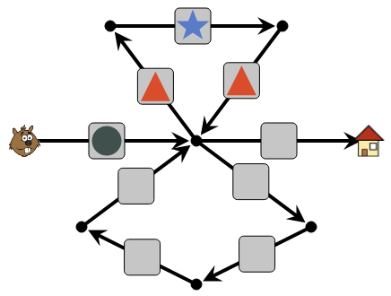
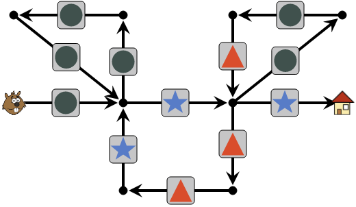

Solution
The instructions consist of 5 shapes. We must therefore pass Beaver by the top path, which has 5 arrows, not the bottom path which has only 4 arrows.
On the way up, we place in the arrows the forms corresponding to the instructions, in order.

For the boxes of the bottom path, we can complete them with any shape, just avoid placing a circle on the way down just after the first junction, as this would conflict with the round used on the way from the top. For example, if we put triangles down, we get the following solution :

In the course, there are two "loops": one going up and one going down. If we try to use the bottom loop first, we are immediately stuck.

Indeed, the following triangle in the instructions will force Beaver to enter a second time in the bottom loop, but then the forms encountered no longer correspond to the instructions.
We must therefore leave Beaver first in the top loop :

Then we take Beaver in the bottom loop. Beaver will then go one more round in the loop of the top, before going out again following the final round.

In the instructions to follow, a pattern is repeated twice (star, triangle, triangle, star), then we have a star, and another pattern that repeats itself twice (round, round, triangle). Let's start by placing the first pattern on the "loop" consisting of 4 arrows.

Then complete with the loop of 3 arrows, located at the top right. As for the loop at the top left, we can fill the boxes with any shape, just avoid putting a star on the first arrow of this loop. Here is a solution :

It's computer science !